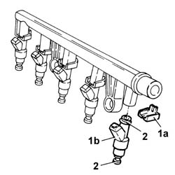

1056B68 set of injectors - r + r with fuel manifold pipe removed - includes seal replacement
- Path
- Procedures > 10 ENGINE > 1056 PETROL FUEL INJECTION SYSTEM > 1056B MULTI-POINT INJECTION SYSTEM (MPI) > 1056B68 set of injectors - r + r with fuel manifold pipe removed - includes seal replacement
- Kind
- repair procedure (removal / refitting; the operation number is the code)
- Applies to
- engines: 2.0 TB, 2.4 20V; all production periods
- Interactive page
- https://sloeber94.github.io/elrnDB-lThss/en/#/75031
Applies to: engines: 2.0 TB, 2.4 20V; all production periods
 Removing
Removing
 Refitting
Refitting1. Remove the retainers (1a) and remove the injectors (1b) from the single fuel manifold pipe.
2. Remove the seals from the injectors

Applies to: engines: 2.0 TB, 2.4 20V; all production periods
Refitting
Removing- Fit new seals on the injectors.
- Fit the injectors on the single fuel manifold pipe and secure them using the retainers.